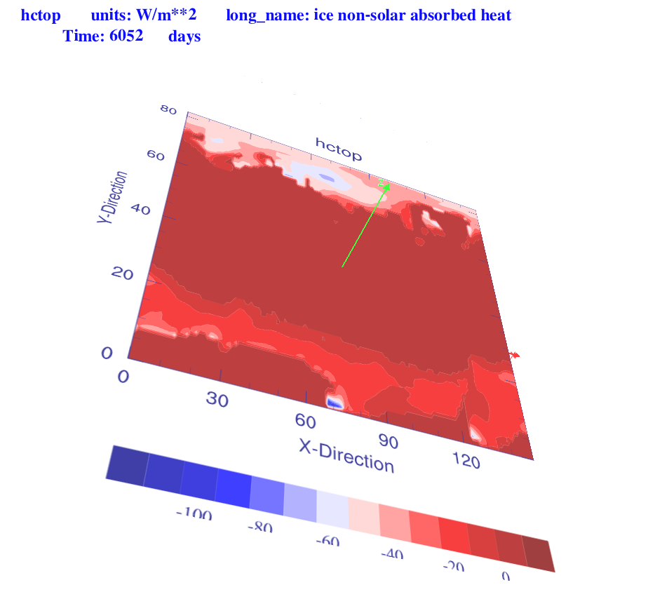
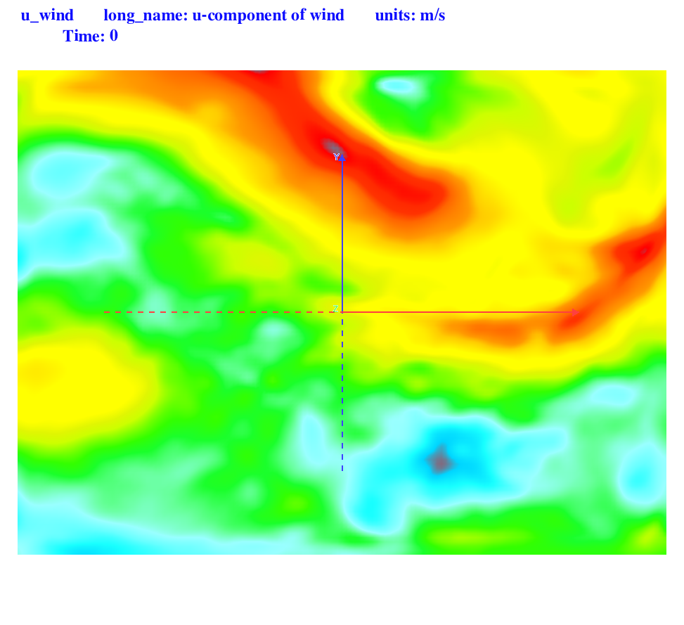
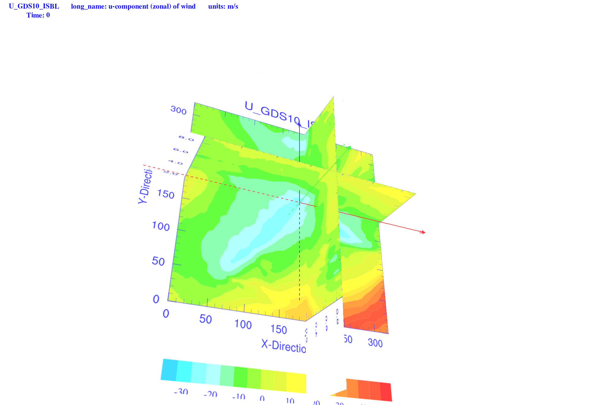
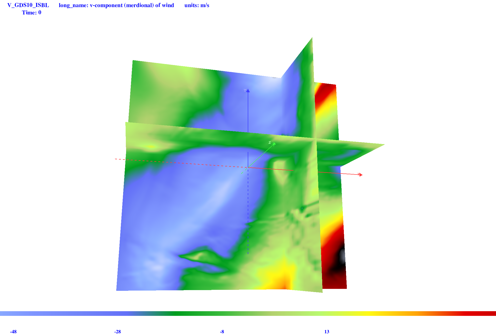
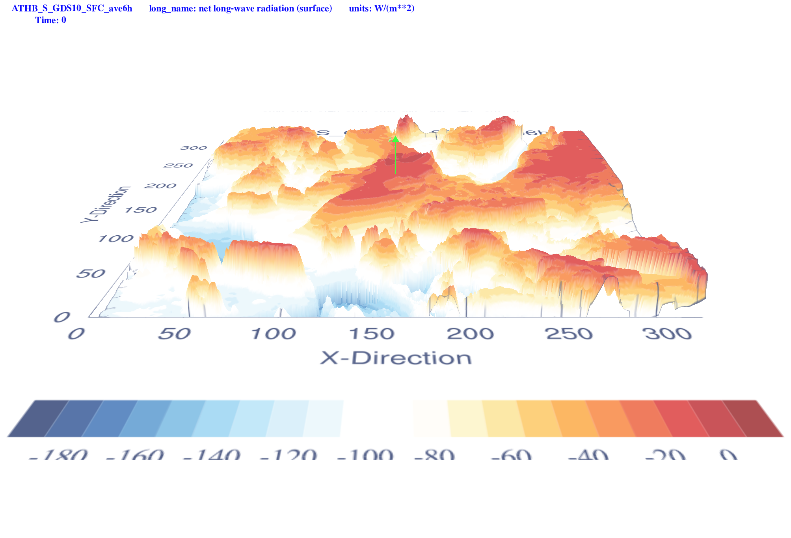

NV for Other type of files
NV can view other files if they have rectangular, or curvilinear grids.
An image of NetCDF file with rectangular grids.

An image of NetCDF file with curvilinear grids.

An image of Grib file.

An image of Grib file.

An image of Grib file.
